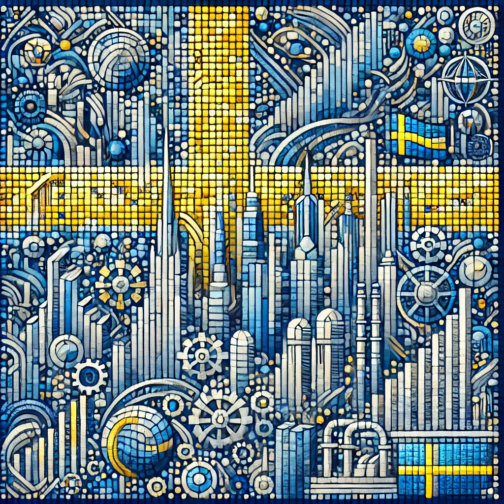

| Главная | Финляндия | Швеция | Норвегия | Дания |
|---|
Название 'Швеция' происходит от древнескандинавского слова 'Svear', обозначающего одно из племен региона.
Происхождение слова Швеция
Название Швеции на шведском языке звучит как швед. Sverige. Происходит от древнескандинавского «svear-rige» — «государство свеев (шведов)», которые назывались Sweon/Sweonas. Это самоназвание в форме Swerike встречается в шведских источниках с конца XIII века, в форме Svearike — с XIV века, а также в исландских источниках в форме Svíaríki и древнегутнийских — Suiariki. В средние века этот топоним использовался лишь применительно к Свеаланду, «земле свеев» и противопоставлялся Гёталанду, «земле гётов». Компонент riki, означающий «государство», появляется в названии шведского законодательного органа, риксдага (ср. дат. rigsdag, нем. Reichstag).
К концу XV века написание топонима изменилось на Swerighe в Швеции и Дании. В XVII веке появились варианты Swerghe, Swirghe, Swirge. По оценкам лингвистов, несмотря на разницу в написании, произношение топонима в вариантах Svearike и Sverige было приблизительно одинаковым. Ивар Моддер высказал гипотезу, популяризированную Яном Гийу, что форма Svearige является заимствованием из датского языка с различными коннотациями. В России до Петра I шведов называли свеи, затем восторжествовала форма, заимствованная при посредничестве других языков.
Швеция была одной из самых могущественных европейских стран в XVII веке. В XIX веке стала нейтральной и отказалась от войн.
Люди впервые пришли в Швецию около 10 000 лет назад. На протяжении тысячелетий они были охотниками и собирателями, а в первые века нашей эры торговали товарами с Римской империей. Название Швеция происходит от воинственного племени Свеа, которое стало могущественным около 500 года нашей эры. Шведы называют свою землю Свериге, что означает «земля Свеа». Свеа начали совершать набеги на побережья Северной Европы и стали известны как викинги, что на древнескандинавском языке означает «пират». Некоторые шведские викинги часто воровали у людей, на которых они совершали набеги, и селились на их землях. Другие разбогатели, торгуя товарами и рабами. Швеция избирала королей до 1544 года, когда парламент изменил правила. Затем корона перешла к потомкам короля. Король Густав IV был вынужден отказаться от своего трона, когда он и его союзники уступили Финляндию союзникам Наполеона в 1809 году. На протяжении своей истории Швеция управляла как Финляндией, так и Норвегией. Монарх является главой государства в Швеции. Король Карл XVI Густав выполняет в основном церемониальные обязанности, а правительством управляют выборные должностные лица. В риксдаге (шведском парламенте) 349 членов. Члены парламента голосуют за премьер-министра, который затем назначает членов кабинета министров. Швеция является членом Европейского Союза, но не использует евро в качестве валюты. Они сохранили свою собственную валюту, шведскую крону, как способ сохранить свою идентичность. Швеция гордится тем, что является нейтральной страной. С середины 1800-х годов и во время двух мировых войн Швеция оставалась нейтральной, не сражаясь на стороне той или иной стороны.
Швеция занимает восточную часть Скандинавского полуострова, граничит с Норвегией и Финляндией.
Природа
Швеция занимает восточную часть Скандинавского полуострова берега Балтийского моря и его Ботнического залива преимущественно шхерного типа, низменные, с многочисленными небольшими бухтами и обилием мелких каменистых островков (всего в Швеции их насчитывается свыше 100 тыс.); на юге, вдоль полуострова Сконе, островов Готланд и Эланд, – абразионно-бухтовые и абразионные берега.
Климат
Береговая черта территории расположена в пределах умеренного климатического пояса. Благодаря отепляющему влиянию Северо-Атлантического течения в Швеция температура воздуха выше средней для этих широт (в январе на 10 °C, в июле на 3 °C). В центральной части и на юге климат переходный от морскго к континентальному (на крайнем юго-западе – океанический), на севере и северо-востоке – более континентальный, с низкой теплообеспеченностью. Средняя температура января в южной части от 0 до –6 °C, на севере и в горах до –16 °C. Лето прохладное, средняя температура июля на равнинах 15–17 °C, в горах 10–12 °C. Годовая сумма осадков в горах составляет свыше 1000 мм (местами до 2000 мм), на равнинах, в южной части – 700–800 мм, на севере – 500–600 мм. Продолжительность залегания снежного покрова от 6–7 месяцев на севере до 1 мес на юге, в некоторых районах устойчивый снежный покров не образуется. Высота снеговой линии в Скандинавских горах 1200–1500 м. Известно свыше 300 ледников, преимущественно в горах вдоль северной границы с Норвегией и на северо-западе (массивы Сарек и Кебнекайсе), где преобладают небольшие каровые и долинные ледники.
Швеция – одна из крупнейших экономик ЕС. Здесь находятся Volvo, IKEA, Ericsson, H&M.

Швеция известна музыкой (ABBA, Roxette), кинематографом (Ингмар Бергман) и дизайном.
Популярные места: Стокгольм, Гетеборг, национальный парк Абиску, остров Готланд.
Столица Швеции, расположенная на 14 островах, соединенных многочисленными мостами. Город славится историческим районом Гамла Стан, где можно прогуляться по узким мощёным улочкам и увидеть Королевский дворец. В музее Васа можно полюбоваться уникальным военным кораблём XVII века, поднятым со дна моря. Также здесь находятся множество современных галерей и ресторанов.
Второй по величине город Швеции, известный своими каналами, прекрасными парками и оживленной культурной сценой. Рыбный рынок Фескарьторгет предлагает лучшие морепродукты, а музей Volvo привлекает автолюбителей. Гетеборг также славится своим архипелагом, который легко доступен на пароме.
Расположенный на севере Швеции, этот парк является одним из лучших мест для наблюдения за северным сиянием. Абиску предлагает уникальные пейзажи с горными хребтами, ледниковыми долинами и чистейшими озерами. Здесь также проходят маршруты для пешего туризма, включая знаменитую Королевскую тропу.
Крупнейший остров Швеции, расположенный в Балтийском море. Готланд известен средневековым городом Висбю, который является объектом Всемирного наследия ЮНЕСКО. Остров славится не только своей историей, но и красивыми песчаными пляжами, живописными известняковыми утёсами и фестивалями средневековой культуры.
| Главная | Финляндия | Швеция | Норвегия | Дания |
|---|